地政学
ヴァラナシは北インド平原の宗教都市で、ガンジス川交通と巡礼路、州政治、国政の象徴性を結びます。首都ではありませんが、ヒンドゥー社会の記憶を通じ政治的意味も帯びます。サールナートも近い精神文化の結節点です。

🇮🇳 インド / アジア / World City Atlas
ガンジス川の巡礼、火葬の儀礼、古い路地、絹織物、大学、観光、環境問題が重なり、インド文明の時間を日常として抱える聖都。
都市の骨格
ヴァラナシはガンジス川西岸のガートを軸に、巡礼、火葬、織物、大学、観光、日々の買い物を密集した路地で結んでいます。
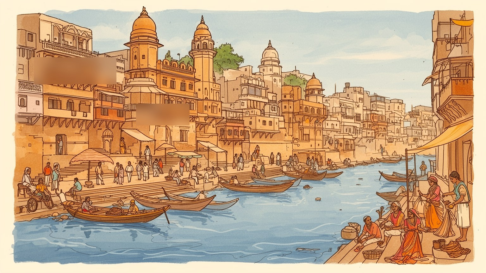
ヴァラナシは北インド平原の宗教都市で、ガンジス川交通と巡礼路、州政治、国政の象徴性を結びます。首都ではありませんが、ヒンドゥー社会の記憶を通じ政治的意味も帯びます。サールナートも近い精神文化の結節点です。
絹織物、礼拝用品、観光、宿泊、船、飲食、小売、大学、医療が雇用をつくります。職人と露店、案内人、清掃労働が聖地の経済を支え、不安定な収入も多いです。祭礼暦が仕事量と家計を揺らし、路地商いも厚いです。
沐浴、プージャ、火葬、寺院巡礼、古典音楽、サンスクリット学問が日常に近いです。死を扱う儀礼は見世物ではなく、家族の祈りと再生観を支える深い営みです。多宗教の職人文化も街の厚みをつくる深い余韻を残します。
路地の家、茶屋、市場、学校、客引き、巡礼者、学生、外国人旅行者が同じ街路を使います。観光収入は大きいですが、混雑、衛生、川の汚染、家賃上昇も暮らしを揺らします。通勤や買い物も聖地の景観を支えます。
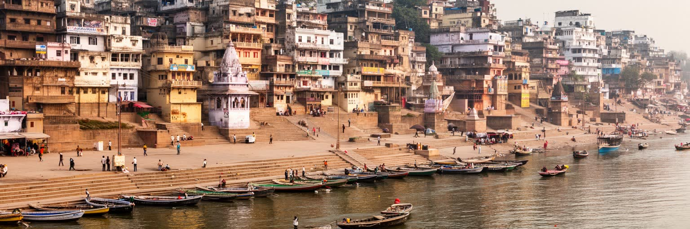
ヴァラナシはガンジス川が大きく弧を描く西岸に張りつく都市で、旧市街の斜面は水辺へ向かって段状に下ります。川の対岸は比較的開け、朝日が水面に差すため、巡礼者は街を背にして東を向き、沐浴や祈りを行います。この地形は信仰上の象徴であるだけでなく、都市の移動、排水、観光、洪水対策を左右してきました。ガートと呼ばれる階段状の河岸は、単なる景観ではなく、礼拝、洗濯、船着き、火葬、集会、商いの場であり、地区ごとに性格が異なります。背後の路地は細く複雑で、寺院、宿、住宅、茶屋、絹商、牛、バイク、人力車が密に交わります。広い道路や新しい橋が増えても、旧市街の身体感覚は川へ向かう歩行で形づくられます。雨季には水位上昇がガートを飲み込み、乾季には階段が広く現れるため、都市の表情は季節で変わります。川の神聖さと現実の水質問題は切り離せず、地理を読むことは信仰、生活排水、観光利用、行政投資を同時に読むことでもあります。都市の東西で視界が大きく違うことも重要で、旧市街側は密度と記憶が積み重なり、対岸は一時的な祭礼や眺望の場として機能します。橋や幹線道路は巡礼客を運ぶが、最後の理解は歩いて階段を下りる経験に残ります。鉄道駅から川辺までの移動は、近代交通と古い巡礼路をつなぐ導入部でもあります。荷物を抱えた家族、僧侶、商人、学生が同じ流れに入り、聖地の地理は到着の瞬間から身体に刻まれます。
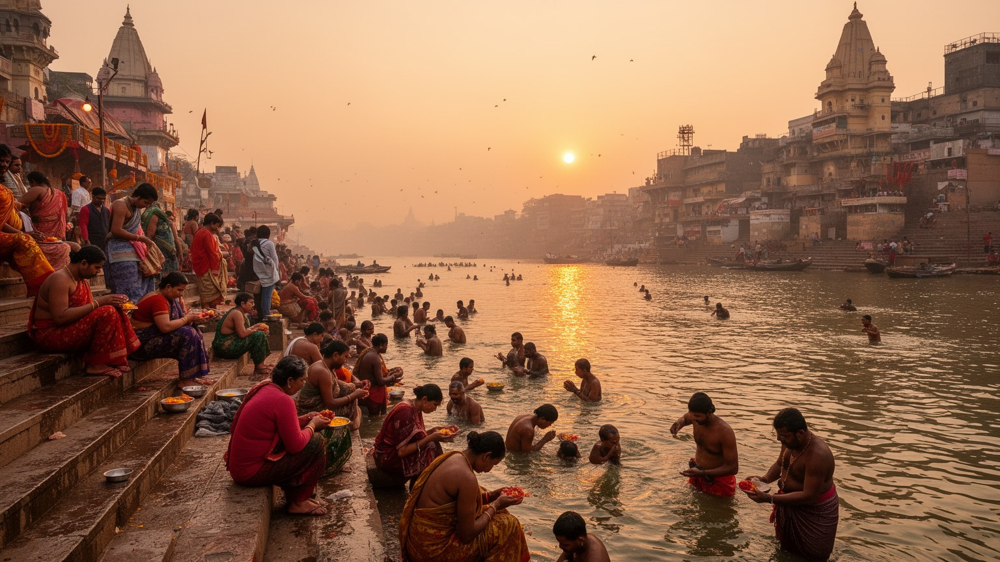
ヴァラナシの一日は夜明け前から始まります。巡礼者は宿や路地からガートへ降り、ガンジス川に触れ、祈りを唱え、家族の健康や先祖への思いを水に託します。ヒンドゥー教においてガンジスは浄化と救済を象徴する川であり、ヴァラナシで祈り、死を迎え、遺灰を流すことには特別な意味があります。夕方にはガンガー・アールティの灯明儀礼が行われ、鐘、香、炎、歌、群衆、船の灯りが水辺を満たします。訪問者にとって強い光景であっても、そこには観光の演出だけでなく、家族の願い、僧侶の職能、寄進、習慣、世代を越えた信仰があります。儀礼は秩序を保つ一方、混雑や商業化、寄付の圧力、写真撮影の距離感をめぐる問題も生みます。敬意を持って見るためには、祈りを風景として消費せず、人びとが何を大切にし、何を恥じ、何を守ろうとしているのかを考える必要があります。ヴァラナシの聖性は、壮大な寺院だけではなく、毎朝繰り返される小さな行為に支えられています。僧侶、花売り、船頭、清掃員、警備員は儀礼の流れを支える働き手でもあり、信仰の場は労働の場でもあります。巡礼の道順や家族の作法は地域差を持ち、同じ沐浴でも人によって込める意味は少しずつ異なります。祭礼の日には群衆の管理、迷子、救護、交通規制も重要になり、祈りの高揚は都市運営の緊張と隣り合います。静かな個人の祈りと大規模な公共儀礼が同じ河岸で続くことが、この街の時間を厚くします。
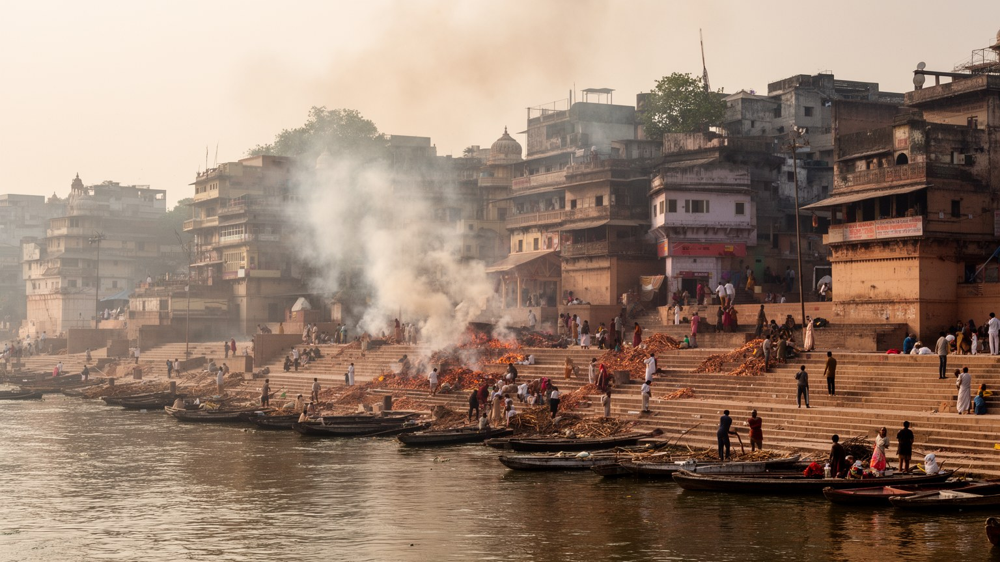
マニカルニカー・ガートやハリシュチャンドラ・ガートでは、火葬が日常的に行われます。ヴァラナシを語る時、この光景を刺激的な異文化として扱うことは避けなければなりません。ここでの火葬は、亡くなった人を送り、魂の解放を願う家族の宗教的実践であり、悲しみ、義務、信頼、費用、司祭や火葬労働者の知識が重なる場です。薪の調達、遺体の搬送、儀礼の進行、灰の処理は多くの人の労働で支えられ、カーストや職能、貧富の差も関わります。観光客が目にする炎の背後には、死を都市の外へ追いやらず、生活の近くで受け止める社会の考え方があります。一方で、木材使用、煙、河川環境、遺族の負担、写真撮影の無作法は現代的な課題でもあります。ヴァラナシの死生観は、生と死を対立させるより、輪廻と解放、家族の責任、聖地への到着を一つの流れとして捉えます。火葬ガートを理解するには、見る側の好奇心を抑え、そこで祈る人びとの尊厳を中心に置く姿勢が必要です。遺族は移動費や滞在費も負担し、都市の宿や食堂、案内人はその時間を支えます。炎が絶えない場所であっても、そこで交わされる声は静かで、喪失を抱える家族の近さを忘れてはなりません。電気火葬炉の導入や環境対策は議論を呼ぶが、伝統と衛生を対立させるだけでは解決しません。遺族の選択、費用、儀礼の意味、働き手の安全を合わせて考える必要があります。
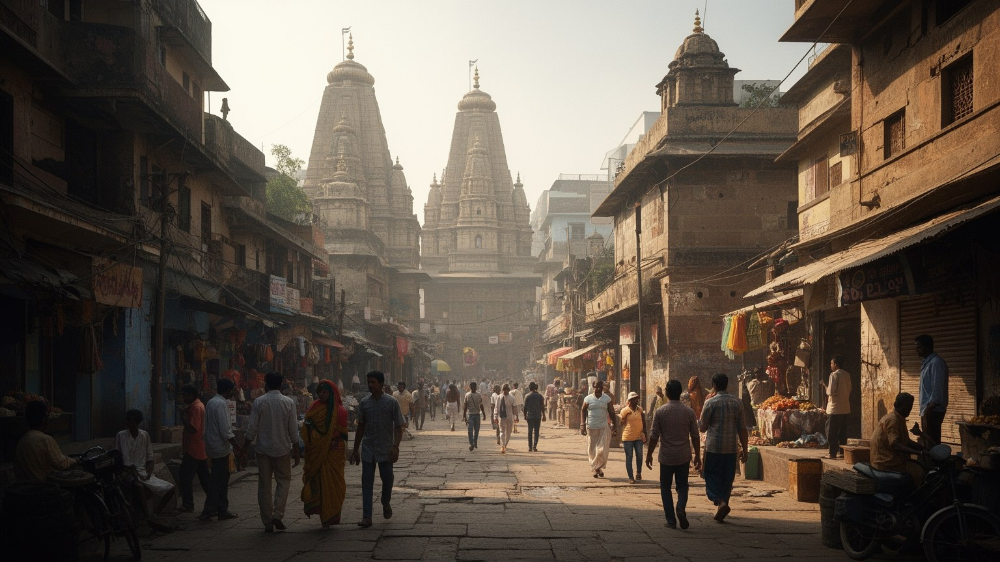
ヴァラナシは寺院都市であり、同時に現代インド政治の象徴的な舞台でもあります。カーシー・ヴィシュワナート寺院を中心とするシヴァ信仰は、長い巡礼の歴史を持ち、都市の地名、商い、祭礼、寄進、街路整備に深く関わります。近年の寺院回廊整備や観光インフラの改善は、巡礼者の移動を楽にし、都市の見え方を大きく変えました。一方で、再開発は古い住宅や小さな店、路地の記憶をどう扱うかという問題を伴います。ヴァラナシは首相の選挙区としても知られ、ヒンドゥー・ナショナリズム、都市美化、世界遺産的な演出、宗教観光の拡大が重なる場所になりました。寺院を大切にする信仰心と、多宗教社会の共存、住民の生活権、歴史的な層の保存は、常に丁寧な調整を必要とします。ムスリムの職人や商人も都市経済を支え、聖地の名声は一つの宗教だけで完結しません。政治的な熱が高まるほど、街の複雑さを単純な物語に押し込めない視点が重要になります。ヴァラナシの公共空間では、祈り、選挙、開発、商売、記憶が同じ石畳の上で交差しています。大規模な整備は安全や歩きやすさを改善する一方、誰の歴史を前面に出し、誰の生活を脇へ押すのかを問います。聖地を現代都市として更新するには、信仰の尊重と住民参加を両立させる制度が欠かせません。宗教的な誇りが公共投資を動かす時ほど、少数派の不安や零細商店の移転も丁寧に扱う必要があります。象徴性の強い都市では、開発の言葉そのものが住民の尊厳に触れます。
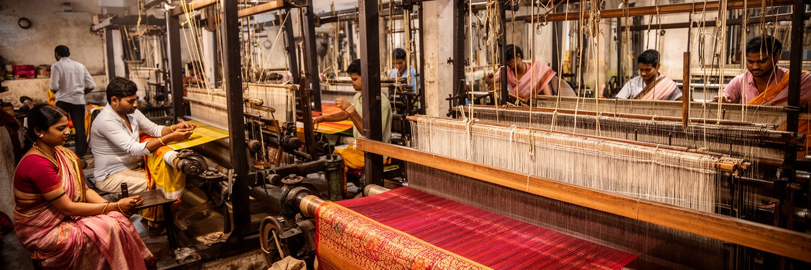
ヴァラナシはバナーラス・サリーで知られる絹織物の都市です。金銀糸の模様、花や幾何学の意匠、婚礼衣装としての価値は、長い職人技と商業ネットワークに支えられてきました。織機の音が響く地区では、ヒンドゥーとムスリムの職人、家族経営の工房、仲買人、染色、糸商、仕立て、卸売、小売が細かくつながります。ですが手織りの名声の背後には、低い賃金、電力費、原材料価格、機械織りや輸入品との競争、若い世代の転職、信用取引の不安があります。観光客が買う一枚の布は、華やかな土産であると同時に、都市の労働と階層を映す商品です。職人の技能は宗教都市のイメージを補い、ヴァラナシを生活産業の街として成立させてきました。デザイン学校、オンライン販売、協同組合、公的支援は新しい可能性を開く一方、ブランド化だけでは作り手の暮らしを守れません。チョウク周辺の絹店での買い物には、素材、時間、手間、作り手の取り分を聞く姿勢が必要です。絹織物は、祭礼と結婚、女性の装い、地域経済、多宗教の職能が交差する都市の記憶です。工房は住宅の一部であることも多く、仕事と家族生活の境目は薄いです。騒音や粉じん、長時間の座業は健康にも影響し、伝統の美しさは働く身体の負担と切り離せません。女性や子どもが補助作業を担う家庭もあり、工芸は家計全体の時間配分を変えます。名産品として称賛するだけでなく、教育、医療、信用へのアクセスまで見なければ、産業の持続性は語れません。
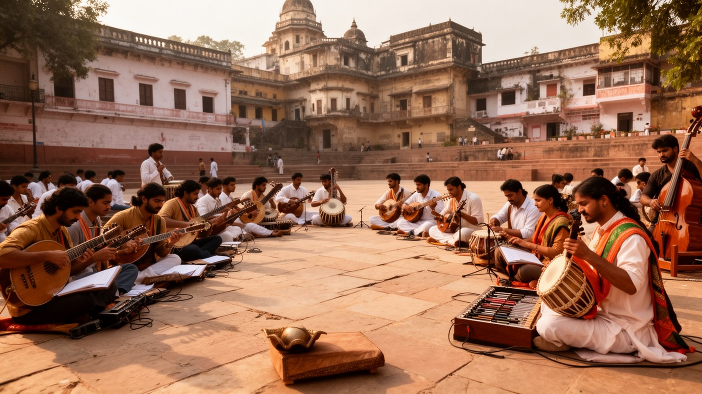
ヴァラナシは巡礼都市であるだけでなく、学問と音楽の都市でもあります。バナーラス・ヒンドゥー大学は近代インドの教育構想を背負って設立され、医学、工学、人文、芸術、サンスクリット研究を含む大きな知的拠点となりました。サンスクリット学校や私塾もあり、学生街では下宿、食堂、書店、政治討論、試験準備、就職の不安が日常を作ります。さらにヴァラナシはヒンドゥスターニー古典音楽、シタール、タブラ、声楽、舞踊、宗教歌の伝統で知られ、師弟関係による稽古と公演文化が育ってきました。夜の小公演や祭礼の歌は、寺院、家庭、舞台、観光イベントを結び、都市の聴覚的な記憶を形づくります。学問と芸能は聖地の飾りではなく、解釈、修練、身体技法、言語、歴史を受け継ぐ仕組みです。一方で、大学の拡大は交通や住宅を変え、若者の流入は街に新しい消費と政治意識を持ち込みます。古典芸能も市場化や観光向けの短縮、配信時代の評価に向き合います。ヴァラナシの知の厚みは、経典の暗唱と研究室、夜の演奏と学生の議論が同じ都市圏で響き合う点にあります。宗教教育と世俗教育が近くにあるため、伝統を守る人と技術職を目指す若者が同じバスや茶屋を使います。知識の都市として見ると、聖地は過去の保存庫ではなく、解釈を更新する公共空間になります。音楽家や研究者の活動は観光の余興に収まらず、師から弟子へ長い時間をかけて伝わる実践です。短い滞在では見えにくい稽古の積み重ねが、都市の文化的な信用を保っています。
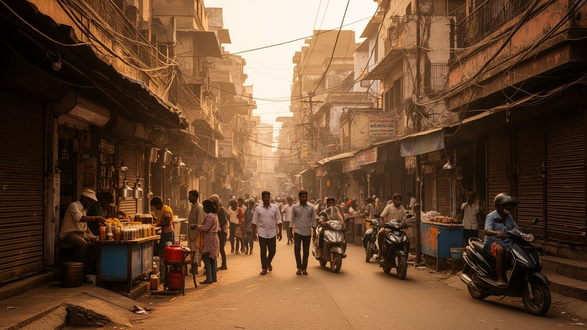
ヴァラナシの旧市街は、地図で見るより身体に近い都市です。人がすれ違うだけで肩が触れそうな路地に、住宅の入口、寺の小祠、牛、スクーター、菓子店、香の店、洗濯物、学校へ向かう子ども、巡礼者の列が並びます。道は曲がり、階段は急で、初めて歩く人には迷路のように感じられます。しかし住民にとっては近所の顔、店の匂い、鐘の音、日陰の位置で読める生活空間です。観光客の増加は宿やカフェを増やし、古い家屋の改装や家賃上昇を進める一方、細い道の清掃、防火、救急搬送、廃棄物処理を難しくします。毎日の暮らしは聖地の荘厳さだけで成り立ちません。水道、停電、学校、医療、買い物、結婚、介護、隣人関係があり、宗教的な音と生活の雑音が重なります。女性や高齢者、子どもにとっての歩きやすさ、夜間の安全、トイレの利用も都市の質を左右します。空き地では少年がクリケットをし、高齢者は茶屋で新聞や近所の知らせを聞きます。路地を尊重して歩くことは、写真映えする混沌を見ることではなく、そこに住む人の時間を妨げないことから始まります。ヴァラナシの本当の密度は、川辺の壮観よりも、日々の小さな往来に現れます。狭さは不便であると同時に、近所の助け合いや商売の記憶を生む条件でもあります。再開発で道が広がる時、失われる親密さと得られる安全をどう比べるかが問われます。観光客が立ち止まる角にも、住民には通学路や配達路としての意味があります。
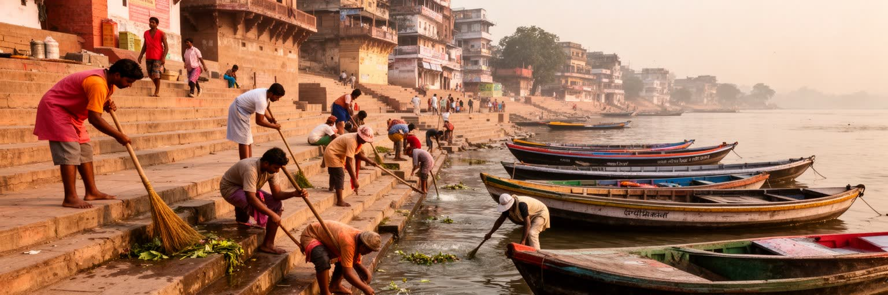
ガンジス川はヴァラナシの精神的中心であると同時に、深刻な環境管理の課題を抱える水系です。生活排水、下水処理能力の不足、宗教行為に伴う供物、火葬や祭礼の残滓、上流からの汚染、都市化による流入は、水質を悪化させてきました。川を聖なるものとして崇敬する感覚と、科学的に安全な水を守る必要は対立するものではありません。むしろ、聖性を大切にするからこそ、下水処理、廃棄物回収、公共トイレ、火葬施設、排水管、河岸清掃、住民教育を現実的に整える必要があります。行政の浄化事業は投資を呼び込みますが、設備が動き続けるか、貧しい地区まで届くか、清掃労働者の安全が守られるかが問われます。巡礼者や観光客も、花やプラスチック、洗剤、写真撮影だけでなく、自分の行動が川へどう戻るかを考える責任を持ちます。ヴァラナシの環境問題は、信仰を否定する議論ではなく、信仰が暮らしと自然をどう支えるかを問い直す議論です。水に触れる喜びと感染症の不安が同じ場所にある現実を直視してこそ、川を未来へつなぐ政策が意味を持ちます。改善には大きな施設だけでなく、家庭排水の接続、日常清掃、祭礼後の回収、川沿いで働く人への装備が必要になります。聖なる川を守る仕事は、祈りと同じくらい地道な都市運営です。水質の数字は行政報告に現れますが、住民が実感するのは匂い、泡、病気、魚、足元の泥です。その感覚を政策に結びつけることが、信頼を生む第一歩になります。
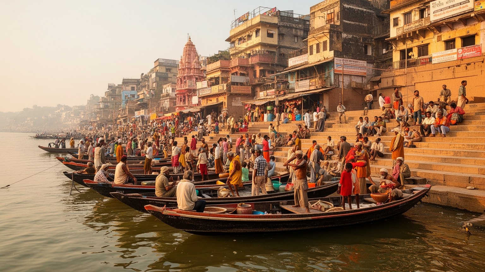
ヴァラナシの観光は、宗教巡礼、国内家族旅行、外国人バックパッカー、写真家、研究者、音楽愛好家、ヨガや瞑想を求める滞在者が混じり合います。早朝のボート、寺院巡り、ガートの散策、絹織物の買い物、路地の食べ歩き、音楽公演、近郊のサールナート訪問は、多くの雇用を生みます。ホテル、ゲストハウス、案内人、船頭、リキシャ運転手、土産物店、洗濯、清掃、警備、両替、料理人は、訪問者の流れに生活を結びつけています。ですが観光は収入の機会である一方、季節変動、客引き競争、価格の不透明さ、住民生活への侵入、聖なる儀礼の見世物化、ゴミの増加を伴います。巡礼者は信仰上の目的を持ち、観光客は経験や写真を求めるため、同じ場所でも期待が異なります。都市が持続的に訪問者を受け入れるには、案内の質、交通整理、衛生、宿泊規制、文化的なマナーの共有が欠かせません。観光経済を読む時には、華やかな河岸の眺めだけでなく、低賃金で働く人、非公式な仕事に頼る人、静かな生活を求める住民の声も見る必要があります。地元紙、FM、WhatsAppの連絡網は祭礼の混雑や規制を伝え、街の情報基盤になっています。近年は空港や道路、ホテルの整備で短期滞在もしやすくなりましたが、便利さが増すほど旧市街の負荷は大きくなります。訪問者の数を誇るだけでなく、滞在が地域に残す利益と負担を測る視点が欠かせません。船賃や案内料の交渉も旅の一部ですが、公正な価格と敬意ある態度がなければ、出会いはすぐに不信へ変わります。
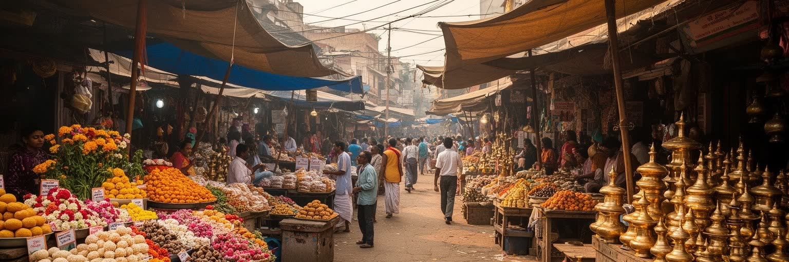
ヴァラナシの食は、ガートの壮大な景観とは対照的に、路地の小さな店や屋台で形づくられます。朝のチャイ、カチョリ、ジャレビ、ラッシー、季節の野菜料理、ベテルの葉を使うパーン、寺院周辺の供物や甘味は、巡礼者と住民の両方に親しまれます。店先では立って食べる人、座って語る人、旅の予定を相談する人が重なり、食は情報交換の場所にもなります。宗教的な慣習から菜食の選択が広く見られ、断食や祭礼の暦は食材や営業時間を変えます。市場では香辛料、花、布、真鍮器、礼拝用品、日用品が並び、聖地の経済と家庭の買い物が分かれずに重なります。一方で、衛生管理、飲料水、食品廃棄物、混雑した調理環境は注意を要します。観光客向けのカフェや宿の食堂が増えることで、若者や外国人の滞在は楽になりますが、地元の価格感覚や商店の性格も変わります。ヴァラナシの食文化は、豪華な料理よりも、祈りの前後に身体を温め、長い歩行を支え、会話を生む日常性に強みがあります。茶の湯気と揚げ油の匂いは、街の朝を知らせる小さな時計でもあります。食の場では身分、性別、旅人と住民の距離も見えます。誰が座れるか、誰が作るか、どの水を使うかという細部が、都市の衛生と社会関係を静かに映しています。祭礼の時期には甘味や花の需要が増え、商店は早朝から忙しくなります。食べ物は腹を満たすだけでなく、祈りの準備、客のもてなし、近所の評判を支える社会的な道具です。
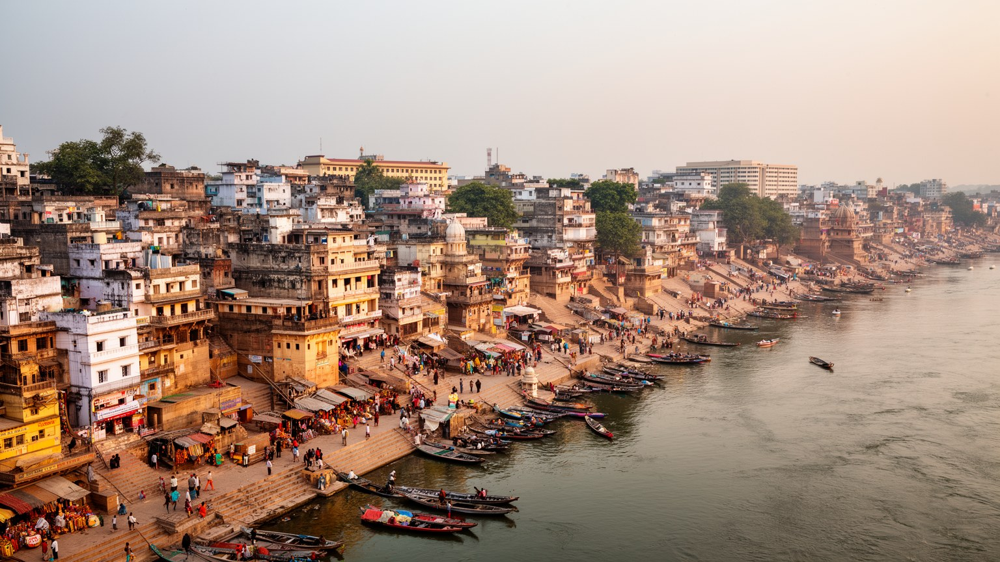
ヴァラナシは、世界的に知られる聖地でありながら、単なる宗教的な象徴ではありません。川で祈る巡礼者、火葬を担う労働者、サリーを織る職人、大学へ通う学生、客を待つ船頭、朝食を売る屋台、下水を整える作業員、寺院を管理する人、旧家を宿に改装する所有者が、同じ都市を別々のリズムで使っています。ここでは死と再生、観光と生活、信仰と政治、伝統工芸と市場競争、聖なる川と汚染対策が離れずに存在します。外から訪れる人は、強烈な光景に目を奪われやすいが、街を理解するには、儀礼を支える人びとの尊厳と、毎日の不便や労働を同じ重さで見る必要があります。ヴァラナシの魅力は、古さが保存されていることだけではなく、古い信仰が現代の交通、衛生、教育、観光、政治と交渉しながら生きている点にあります。川辺の炎、朝の沐浴、路地の茶、織機の音、大学の議論、清掃車の動きを一つの地図に置くと、この都市は神話ではなく、現実の社会として立ち上がります。敬意ある理解は、神秘化でも否定でもなく、聖性と生活を同時に読む姿勢から始まります。聖都という言葉は、住民の苦労を消すためではなく、暮らしの中に祈りが深く入り込む状態を指します。だからこそ、死、汚染、貧困、誇り、職人技、学問を一つずつ丁寧に見る必要があります。訪問者が持ち帰るべきものは奇異さの記憶だけではなく、人の最後の時間を支える都市がどれほど多くの働きと配慮で成り立つかという理解です。